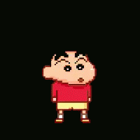

My important memory!
𝔖𝔥𝔬𝔯𝔱 𝔰𝔱𝔬𝔯𝔶 𝔞𝔟𝔬𝔲𝔱 𝔪𝔶 𝔦𝔪𝔭𝔬𝔯𝔱𝔞𝔫𝔱 𝔪𝔢𝔪𝔬𝔯𝔶
 One of the reason why i put the shinchan gif because it is a symbolic of how chaotic my family can be HAHAHA. My family is actually not a really serious type but when it comes to my academic achievement, both of my parents are like a tiger in hunger. Same goes to my younger sister's acedemic achievement. My small family is just what people would describe a shinchan's family. Happy, sad, anger. All of that elements of emotions. I love my family even my abah's flaws, my umi's flaws and my angah's flaws. Second reason is my family's trip to Langkawi is actually quite chaotic and really messy but somehow i find it pleasing because this is going to be my important core memory :) .